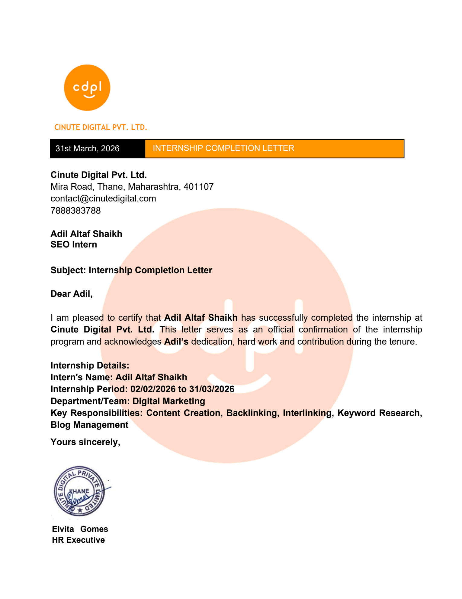

Cinute Digital Pvt. Ltd.

Successfully completed a two-month internship as an SEO Intern at Cinute Digital Pvt. Ltd. During this internship, I worked in the Digital Marketing department where I gained practical experience in Search Engine Optimization (SEO), content optimization and website visibility improvement. I worked on real-world SEO activities including keyword research, backlink creation, interlinking, blog management and content creation.
Cinute Digital Pvt. Ltd.
SEO Intern
Digital Marketing
02 Feb 2026 - 31 Mar 2026
This internship helped me understand how search engines work and how SEO strategies improve website visibility. I gained hands-on experience in keyword analysis, content optimization, backlink creation and website structure improvements. It also improved my communication, teamwork and professional working skills.
Successfully completed the internship and received an official Internship Completion Letter from Cinute Digital Pvt. Ltd.